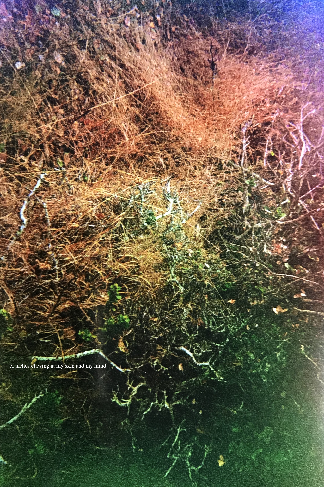

Sometimes in the heat of the summer, I leave my window open. The tinkling voices of stray partygoers or of neighbors out on their porches waft in through my window and enter my dreams.
Huge walls of fire surrounded me. I turned this way and that, searching for a way out. Then I heard it, a baby wailing, breaking the silence of the still night. I followed the cry, going with any leads I could get. I ran through an alleyway, the walls covered in red flaming tongues. Twisting through the small alleys, following the wailing, I made it out. Finally, I broke free of the fire and I raced towards the tree line. I had the urge to look back at my home. All I could see was the fire engulfing the only place I had known for my whole life. I slowly brought myself to look at the ground and my eyes rested on the young, little thing. He only looked a couple of months old, yet he had still saved my life. I lifted the baby in my arms, cradling him carefully as I ran away from the burning town.
Crayon shadows smudge my skin.
I have eggs for eyes. They are usually cloudy and yellowy and sometimes, on occasion, they get runny.
I was traveling with my family from Mexico to the U.S. by bus, and as luggage we each had a shopping cart filled with freshly bought groceries. There were so many shopping carts that they needed a separate bus to carry them all.
Once we got across the border, we were almost in San Francisco, but the driver told us he wasn’t sure we would make it because of a storm up ahead. He started driving off road across this yellow, grassy mountain. I think I screamed a little.
Eventually we got off, but we ended up in Rhode Island, not San Francisco, possible due to the storm. I realized it was Kip’s birthday so I ran over to where they were unloading the shopping carts to look in mine to see if I had any cake mix. I pulled out a promising looking box, but it was waffle mix. Underneath it was another bag, which was pancake mix. I had no idea what the difference between waffle and pancake mix was, but I began to imagine the towering waffle cake I’d make him.
I feel like as I am growing older, I am losing the ability to dream.
Dreams of a white, expansive plain.
Dreaming of a life full of color. Dreaming of a life full of you. But when will it ever be reality? Will it?
Dreams in which I lived the entirety of my next day and everything went wrong. I went grocery shopping, then on my way back home I realized I was late for a meeting because my professor emailed me asking where I was so I ran home but I was wearing my pajamas and the buildings were huge and there was this massive parking garage in the way.
Dreams are pigments of our imagination.
My reoccurring nightmare. It’s night time and the city streets are slick after a light shower. I was in an alley way, filled with black fire escapes. I know they are looking for me. A sporty black car pulls into the alley and the doors open. Sprinting in the other direction, I hear the crack of gunshots just as I turn the corner. I run down the dark, wet streets, until I end up back in the same alley, and the car pulls up and the sequence happens all over again.
Dreams touching dreams, holding dreams, reaching out, touching me touching you.
“You are never too old to set another goal or to dream a new dream” – C.S. Lewis
“One of my favorite dreams – or nightmares – from when I was little was there was this dinosaur and I started shooting it, then it would get angry and chase me. Then I’d shoot it again and then it would chase me.”
“I had a dream that I bit into a donut and all of my teeth fell out. My professor said it means I have something in my life that is unresolved, like I don’t have closure for it.”
“I had a dream that Alex was trying to kill me.”
“I had this dream where we were outside of a church and it was really dark and people were break dancing. Then we teleported to my neighborhood and we were over and my neighbor’s house and she was really mean to my brother so we had to fight her and then there was this bird food grinder and I had to push her in there.”
“Well I was having a dream that just got too real. Someone broke into my house and Jup came out and had him in a choke hold. I was gonna jump in and was waiting for a clear shot to punch the guy, but when I swung, I actually swung my hand in my sleep and knocked my phone across the desk. Was pretty close to badly hurting my hand.”
“I had a dream last night where I was trying on clothes in the middle of a store, like not in a dressing room. But everyone was doing it. And I was trying on dress after dress after dress.”
“I’ve had a funky, well not a spooky dream. I told Cora about it and now I can’t remember it now. Oh wait, no I do. There was this monster from A Quiet Place, I don’t know how I knew it was from that movie because I haven’t seen it, but I knew. Then Ben Stiller came and he was evil. I knew he was evil because he did that thing that evil people do when they start growing and getting bigger. Then I was with my cousin and I started running away and ditched my cousin. I felt pretty bad about it when I woke up.”
“I had a dream where I was packing my bag, but no matter how big a bag I grabbed, it was always too small. And each time I picked a bigger bag from my closet, I found something else I needed to pack. And the objects inside the bag kept expanding and expanding until the seams were ripping and stuffed animal limbs were sticking out of the zipper, which somehow was open and closed at the same time. But, Ted had already called the taxi and they were waiting for me so I really had to leave, but I also really had to pee and I couldn’t decide which was more important. So I woke up and went to the bathroom.”
“I had a dream in which I bought a bus ticked ($1.50) with a twenty dollar bill and the kiosk spit all of my change out in quarters and I was so happy because I had enough quarters to do a few loads of laundry.”
“I had a dream where I was interviewing for a job, but I was standing in the middle of this big lecture hall and the interviewers were seated at a table in front of me, but all of the seats in the lecture hall were also filled with people. I asked, ‘Who are all those people?’ and one of the interviewers responded, ‘You will have to be more polite than that on the job.’”
Kaleidoscopic
Do you dream in color?

How do you define the line between dreaming and writing?
My eyeballs were heavily pulsating, lids swollen, and the tops of my cheeks felt sun kissed. But I couldn’t sleep. I gripped my pen and scribbled furiously. It was if the words were coming too quickly. I squinted at the page, blinking furiously against the blurriness. The e’s were swimming and looked odd, as if they weren’t e’s at all but rather some sort of alien script.
When do dreams become reality?
And I turned off the lights in my mind and you were there. I just needed to open the door.